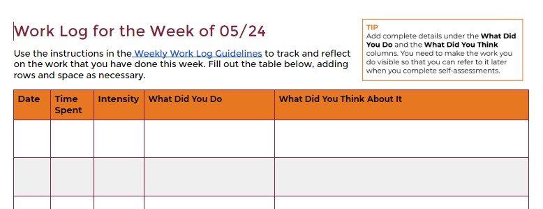

What You Will Practice & Do
- Reflect on the work that you do, noting how you change and improve your writing strategies during the term.
- Gather details that you will use later in the term, when you consider your midterm progress and final performance.
What I Want You to Do
Every week you will track the work that you do for the course in a Canvas Assignment. Your log will note what you do, how long you work, and how hard you worked.
Why I Want You to Do It
Submitting your weekly work log does two things:
- It allows you to keep track of your progress in the class, making sure you are up-to-date on your work.
- It allows me to learn what is working well for you and where you may need more support.
You will rely on your logs to write two self-assessments:
- At midterm, you will write a progress report that assesses the work you have done and how you will achieve your goals during the rest of the course.
- At the end of the term, you will write a performance review (your final exam) that explains what you have accomplished overall and provides a self-evaluation of your work in the course.
When to Do It
- Suggested Due Date: By 11:59 PM on Friday of each week.
- Last Chance Date: Turn your log by 11:59 PM on Wednesday of the next week.
Why? If you need more time, take more time.
These logs must be timely, so you can write, “I didn’t work this week” if that is accurate. It makes no sense to go back to fill out a log several weeks later.
How to Do It
- Open the Weekly Work Log Assignment in the Module for the current week. You can find the link in the Module for the week.
- Authorize access to Google Drive if necessary. You should only need to authorize access once. If you need help:
- Wait for the embedded Google Doc to load in the Discussion.
- Add the relevant details to the embedded Google Doc, outlining the work that you have done for the week. The log pages for each week include the headings shown below, with the date for the current week at the top of the document.:

Under each of these headings, include the following information:
- Date: Just the numbers will work (e.g., 09/25)
- Time Spent: Estimate the number of minutes or hours. Don’t stress about precision. A range will work here (e.g., 5–10 mins.)
- Intensity: Use a word or two to explain how hard you worked. You can plan the words you will use so that your logs are consistent during the term.
- What Did You Do: Describe what you did, using specific details: Use clear and specific details that show me the work that you put in. Here’s an example:
- DON’T: Wrote my self-introduction.
That is probably accurate, but it doesn’t show the work that went into what you did.
- DO: Jotted out the details I wanted to cover. Rearranged the details into an informal outline. Wrote a rough draft in Word. Reread the draft, and added a few details. Double-checked spelling and grammar, and then posted my work.
- What Did You Think About It: Connect the work you have done to the project you are working on. Reflect on the task by considering questions like these:
- Why was what you did helpful?
- What did you find out that will help with the project you are working on?
- What surprised you and why?
- What did you try to do differently, and why?
- How did what you did apply to work you will do in the future?
- What challenges did you encounter and why? How did you overcome them?
- Why did you work go well?
You don't need to answer every question in your reflection. Just put in your best effort and answer the questions that make sense for this week.
How to Assess & Track Your Work
You track and grade your own work in this course. I will review your entries and give you feedback if I want you to change something.
- Watch for feedback comments from me, within 24–48 hours after you turn in your log the first time:
- After the first week, I will check your logs occasionally if I am looking for information on a project. These logs are your own place to track your work, so I will not check them every time and I will comment only if you need to change or add something.
Work is always marked as either 1 for Complete or 0 for Incomplete:
- I will mark this this activity Complete in Canvas Grades, usually within 24–48 hours after the end of the grace period.
- I will mark this activity Incomplete in Canvas Grades if you do not submit your log by the end of the grace period.